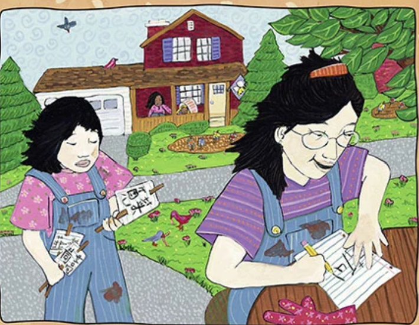
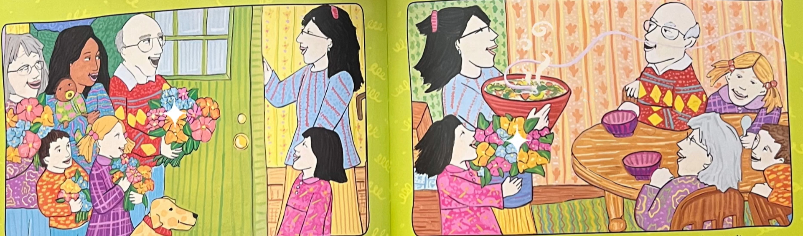

Synopsis
A Chinese American girl helps her mother plant a garden — but while the neighbors grow bright flowers, their patch fills with bumpy, wrinkled, “ugly” Chinese vegetables. She wishes for something prettier, until harvest time, when the vegetables become a fragrant soup that draws the whole neighborhood to their door.
Neighbors trade flowers for soup; the girl learns that what looked different had its own beauty and purpose. The book ends with a vegetable glossary and a soup recipe.
Why read it?
It treats cultural difference as ordinary family life, not as a festival-day costume. The girl’s embarrassment is honest; the resolution is community sharing, not a speech about diversity.
A classic entry point for talking about food, gardens, “normal” vs. “other,” and pride in Chinese American home practices — especially for younger readers.
At a glance
- Form
- Picture book (author-illustrator)
- Age / grade
- Ages 4–8 · Pre-K–3
- Own Voices?
- Yes — Grace Lin (Chinese American) drawing on her own childhood garden and soup.
- Community
- Chinese American family in a mostly flower-growing neighborhood
- Themes
- Difference, foodways, community, belonging, beauty beyond appearance